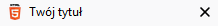
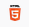
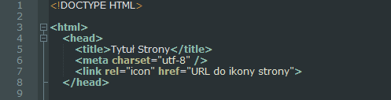
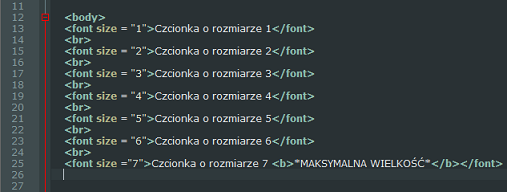
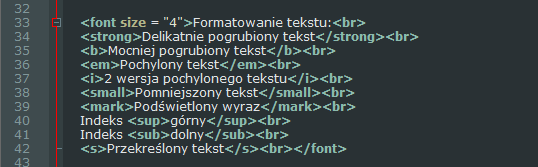
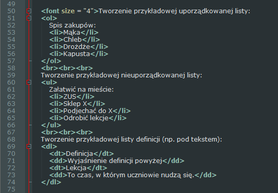
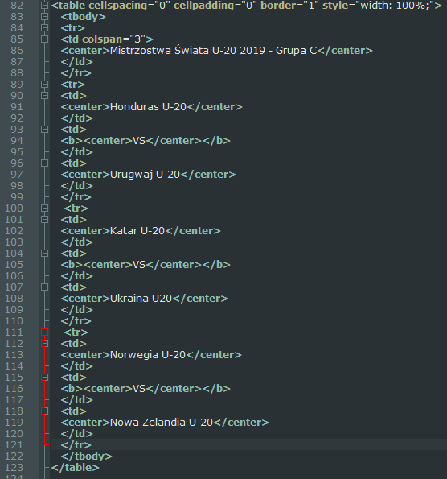

Podstawowe informacje

Pisanie stron internetowych nie jest trudne, jednak aby wszystko się udało trzeba poświęcić na to dużo czasu.
W tym rozdziale podam przykładowe linijki kodu strony oraz opisze, do czego służą i jak się nimi obługiwać.
Przykładowa linijka #1
‹title›Twój tytuł‹/title›
Title służy do ustawiania tytułu twojej strony.
Przykład:

Przykładowa linijka #2#Do czego służy LINK REL="ICON"
‹link rel="icon" href="URL ikony"›
Ta linijka odpowiada za ikonę, która pokazuje się obok tytułu naszej strony.
Przykład:

Teraz przejdziemy do konktretnych czynności...
Aby zacząć pisanie w HTML musimy zacząć od podstawowych czynności, tzn. np. ustawić format tekstu na UTF-8.
Po ustawieniu tego formatu zaczynamy pisać naszą stronę od podstaw:

Po wpisaniu podstawowych informacji dot. sekcji head możemy przejść do sekcji body.
W sekcji body możemy umieścić wszystko, co chcemy aby pokazywało się na stronie:

Dzięki znacznikom font size = "x" możemy ustalać, jaką wielkość ma mieć nasz tekst.
Uwaga! X może wynosić maksymalnie 7!

Dzięki znacznikom strong, mark, itp. możemy ustawić, czy nasz tekst ma być pogrubiony, czy zaznaczony bądź też pochylony (jest też wiele więcej formatów).

Dzięki znacznikom ol oraz ul możemy utworzyć listę posegregowaną bądź też wykropkowaną.
Znacznik dl odpowiada za tworzenie tzw. definicji danego wyrazu.

Dzięki specjalnej konstrukcji znaczników table, tbody, itp. możemy utworzyć tabelę według własnych wymagań.
Wszystkie przykłady są przedstawione na stronie testowej. *KLIK*